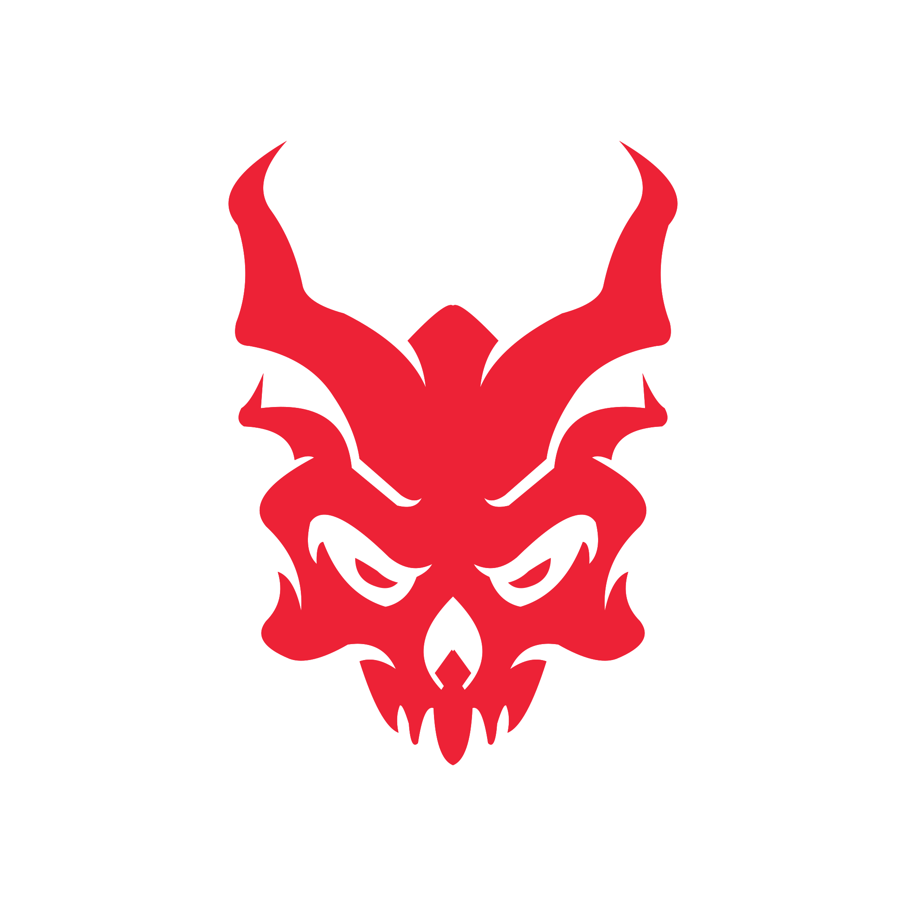

Das nächste Kapitel der Chronik
Starte deine Expedition, versammle die Riss-Magier und verteidige die Feste der Letzten Ruhe.
Erzeuge eine neue Expedition mit eigenem oder zufälligem Seed.
Du hast bereits 3 Expeditionen gespeichert. Lösche zuerst eine bestehende Kampagne, um eine neue zu starten.
Errungenschaften, Bestleistungen und deine Bilanz gegen jeden Erzfeind.
Es werden die letzten 3 Expeditionen gespeichert.
Legenden der Feste
Dein Fortschritt über alle Expeditionen hinweg: Errungenschaften, Bestleistungen und deine Bilanz gegen jeden Erzfeind.
Die drei schnellsten gewonnenen Expeditionen je Spieleranzahl, gemessen an der Gesamtspielzeit.
Siege und Niederlagen je Versuch, durchschnittliche Dauer gewonnener Kämpfe. Die Ampel leitet sich aus der Siegquote ab (grün leicht, gelb mittel, rot schwer) und erscheint ab 5 Versuchen gegen den Erzfeind, davor steht "Offen".
Optionen
Wähle, welche Erweiterungen für Aeon's End zur Verfügung stehen sollen.
Wähle, mit welchen Kosten-Einschränkungen die 4 Zauber / 3 Kristalle / 2 Artefakte des Start-Marktplatzes gezogen werden. Mehrere Setups können gleichzeitig aktiv sein — bei jeder neuen Expedition wird eines davon deterministisch über den Seed ausgewählt. Farben: Violett = Kristall, Blau = Artefakt, Beige = Zauber.
Rein informelles Rating als Einschätzungshilfe bei der Charakterauswahl — keine Spiellogik ist daran gebunden. Magier per Drag & Drop in eine andere Zeile ziehen, um die Einordnung anzupassen.
Gilt für den Reihenfolge-Randomizer im Kampf-Detail-Screen.
Neue Expedition erzeugen
Gib der Expedition einen Namen und optional einen eigenen Seed. Bleibt der Seed leer, wird beim Erzeugen automatisch ein zufälliger Seed vergeben.
Aufbau — Charakterauswahl
Wähle deine Magier für die Gruppe.
Aufbau — Marktplatz-Vorschau
Das ist der Start-Marktplatz dieser Expedition (4 Zauber, 3 Kristalle, 2 Artefakte).
Aufbau — Nemesis-Vorbereitung
Lege alle verbesserten Nemesis-Karten, die diese Expedition insgesamt benötigt, bereit. Welcher Erzfeind welchen Kampf bestreitet, bleibt weiterhin bis zum jeweiligen Reveal ein Geheimnis.
Erzählung generieren
Kopiere den Prompt in ein Claude-Fenster, füge die Antwort danach hier ein.
Auf manchen Tablets funktioniert das automatische Kopieren nicht — der Prompt steht dann unten als Vorschau: Text per Fingertipp markieren und über das Kontextmenü kopieren.
Stelle Party, Marktplatz und aktive Schätze aus deiner gesamten Kaserne frei zusammen (entsprechend der Regeln). Eine gültige Auswahl wird automatisch übernommen.
Aktuell an der Reihe
Die linkeste Karte wird als nächstes gezogen.
Nur für seltene Sonderfälle (z. B. Karten- oder Nemesis-Effekte, die eine bereits abgelegte Karte dieser Runde zurück ins Deck mischen).
Niederlage — Unterstützung anfordern
Wähle eine Kategorie (oder "Zufall") und erhalte Unterstützung für deinen nächsten Versuch.
Niederlage — Marktplatz ausgleichen
Sieg — Konfiguration Marktplatz & Schätze
Wähle genau 1 Karte je Typ (Zauber, Kristall, Artefakt), die aus dem aktiven Marktplatz in die Kaserne übergeben werden soll – entweder eine bestehende oder die neu gezogene. Es bleiben stets 4 Zauber, 3 Kristalle, 2 Artefakte aktiv.
Die Feste der Letzten Ruhe ist gerettet
Expedition vollendet
